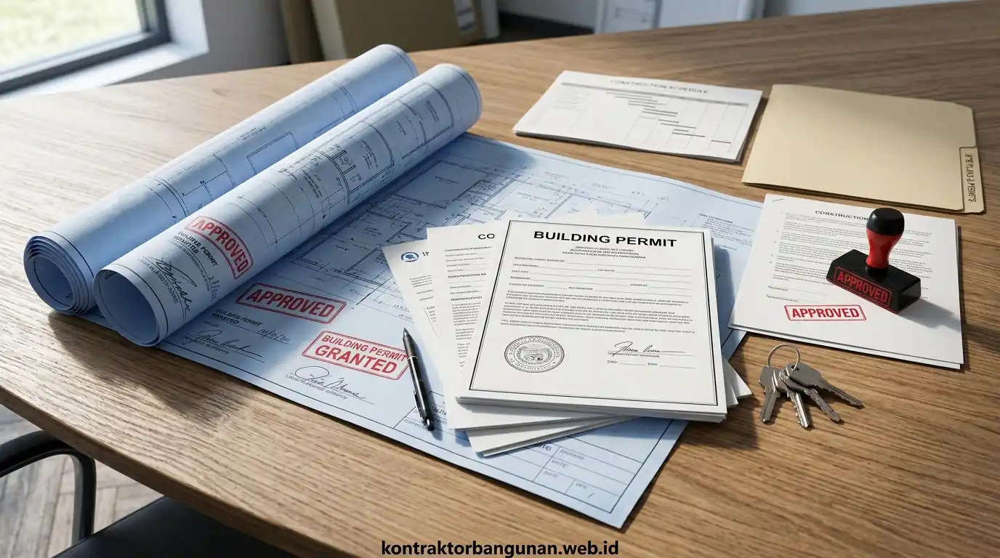

Mengapa Legalitas PBG dan SLF Menjadi Syarat Mutlak Sebelum Memulai Konstruksi?
Persetujuan Bangunan Gedung (PBG) dan SLF adalah dokumen hukum negara yang menjamin kepatuhan standar keselamatan, tata ruang, dan keabsahan jual-beli properti.
Banyak masyarakat masih mengira bahwa Izin Mendirikan Bangunan (IMB) masih berlaku seperti dulu. Sejak diberlakukannya Undang-Undang Cipta Kerja dan Peraturan Pemerintah No. 16 Tahun 2021, sistem IMB telah resmi digantikan oleh Persetujuan Bangunan Gedung (PBG). PBG bukan sekadar izin administratif, melainkan standar pengujian teknis yang membuktikan bahwa rancangan rumah Anda memenuhi kriteria ketahanan gempa, proteksi kebakaran, ventilasi sanitasi, dan keselamatan lingkungan.
Selain PBG saat akan membangun, setelah bangunan selesai berdiri Anda juga wajib mengantongi Sertifikat Laik Fungsi (SLF) sebagai bukti bahwa bangunan aman untuk dihuni. Tanpa kedua dokumen ini, rumah Anda tidak dapat diasuransikan, sulit dijadikan jaminan modal di bank, dan rawan sengketa tata ruang jika terjadi pelebaran jalan di masa depan.
Cakupan Dokumen dalam Layanan Paket Legalitas Lengkap Bangun Rumah
Paket legalitas lengkap mencakup lima pilar dokumen perizinan resmi mulai dari analisis zonasi tata kota hingga uji keandalan kelayakan fungsi bangunan.
Layanan paket perizinan terintegrasi kami membebaskan Anda dari kerumitan birokrasi melalui penyusunan berkas berikut:
- Pengurusan KRK / Informasi Pola Ruang (IPPT): Pengecekan zonasi lahan ke Dinas Cipta Karya / Tata Ruang untuk memastikan peruntukan tanah (zona pemukiman R-1/R-2), batas GSB jalan, KDB maksimum (biasanya 60%), dan KLB.
- Penyusunan Gambar Teknis Arsitektur Terakreditasi STRA: Denah tampak potongan, detail fasad, denah pola lantai, dan spesifikasi arsitektur yang disahkan oleh arsitek berlisensi resmi.
- Penyusunan Berkas Perhitungan Struktur & Geoteknik Ber-SKK: Kalkulasi beban gempa, permodelan 3D rangka beton/baja, detail pembesian pondasi footplate, dan resume uji tanah sondir.
- Penyusunan Dokumen Utilitas MEP & Sanitasi Lingkungan: Gambar instalasi listrik PLN, skema resapan air hujan (rainwater harvesting), instalasi pembuangan grey/black water, dan tangki septik berstandar SNI.
- Pengawalan Akun SIMBG hingga Penerbitan Dokumen PBG & SLF: Pengunggahan berkas digital, pendampingan sidang verifikasi dengan Tim Penilai Teknis (TPT), hingga bukti pembayaran Retribusi Daerah resmi (SKRD) dan SK PBG terbit.
- Kalkulasi Luas Terukur: Nilai retribusi PBG daerah dihitung berdasarkan luas lantai dan indeks koefisien fungsi bangunan. Mengurus izin dengan denah terukur presisi menghindarkan Anda dari kelebihan taksiran tarif pajak retribusi daerah (over-assessment).
- Status Sertifikat Bersih: Pastikan tidak ada sengketa batas tanah dengan tetangga sebelum pengukuran peta situasi KRK dilakukan petugas dinas.
Alur dan Tahapan Pengurusan Izin Bangunan Melalui Portal SIMBG PUPR
Proses pengurusan perizinan melalui portal SIMBG melibatkan tahapan verifikasi berkas, sidang konsultasi teknis TPT, penerbitan SKRD, dan pencetakan dokumen PBG.
Alur kerja profesional yang kami jalankan untuk memastikan berkas Anda disetujui tanpa kendala:
Dengan menyerahkan pengurusan kepada tim spesialis Kontraktor Bangunan, seluruh revisi catatan teknis dari dinas langsung dikerjakan oleh drafter dan insinyur kami dalam kurun waktu 1x24 jam sehingga berkas tidak pernah kedaluwarsa (expired) di sistem pemerintahan.

Verifikasi berkas digital, gambar kerja DED, dan koordinasi dengan Tim Penilai Teknis SIMBG dinas tata ruang.
Tabel Komparasi: Urus Legalitas Sendiri vs Menggunakan Paket Kontraktor Bangunan
Perbandingan langsung efisiensi waktu, biaya total, dan risiko birokrasi antara pengurusan mandiri dan paket legalitas terpadu.
| Parameter Pengurusan | Pengurusan Mandiri / Melalui Calo | Layanan Paket Kontraktor Bangunan |
|---|---|---|
| Ketersediaan Tenaga Ahli STRA & SKK | Harus mencari & membayar insinyur terpisah | Sudah termasuk tim arsitek & sipil internal berlisensi |
| Kelengkapan Gambar Teknis DED | Kerap ditolak karena format tidak standar PUPR | 100% lolos verifikasi standar teknis SIMBG |
| Transparansi Biaya Pengurusan | Rentan pungli calo dan biaya siluman membengkak | Biaya paket flat transparan tertulis dalam kontrak |
| Waktu Penyelesaian Izin | 3 hingga 8 bulan (sering terhambat revisi) | 3 hingga 6 minggu kerja (terjadwal & terpantau) |
| Pengawalan Sidang Teknis Dinas | Pemilik rumah kebingungan menjawab istilah teknis | Didampingi langsung oleh Insinyur & Arsitek kami |
| Penerbitan Sertifikat Laik Fungsi (SLF) | Jarang diurus atau harus bayar biaya baru lagi | Terintegrasi dalam satu paket tuntas siap huni |
| Garansi Keabsahan Dokumen | Berisiko dokumen palsu / tidak terdaftar di sistem | Dokumen resmi dengan barcode digital dinas PUPR |
Risiko Hukum dan Finansial Membangun Rumah Tanpa Dokumen PBG Resmi
Mendirikan bangunan tanpa izin PBG dapat memicu penyegelan paksa, denda miliaran rupiah, hingga penolakan transaksi jual-beli notaris.
Mengabaikan legalitas perizinan bangunan membawa 4 ancaman besar bagi pemilik properti:
- Surat Peringatan & Penyegelan Bangunan: Dinas Pengawas Bangunan berhak memasang garis segel (polisi pamong praja) dan menghentikan seluruh pekerjaan tukang di lokasi seketika.
- Denda Administratif Berat: Sesuai PP 16/2021 Pasal 344, bangunan tanpa PBG dapat dikenakan denda administratif maksimal 10% dari nilai total bangunan gedung.
- Penolakan Akad Jual-Beli & KPR Bank: Notaris/PPAT dan pihak perbankan menolak memproses balik nama sertifikat atau pencairan kredit tanpa adanya dokumen PBG yang sah.
- Kendala Pemasangan Sambungan Listrik & PDAM Baru: Instansi utilitas publik mewajibkan lampiran nomor registrasi PBG/SLF untuk pemasangan gardu listrik daya besar atau pipa air komersial.
Syarat Berkas yang Wajib Disiapkan Pemilik Rumah untuk Memulai Proses Legalitas
Pemilik rumah hanya perlu menyiapkan dokumen kepemilikan tanah dan identitas diri, sementara seluruh berkas teknis disiapkan oleh tim kami.
Daftar dokumen sederhana yang perlu Anda serahkan:
- Fotokopi KTP dan NPWP Pemilik Tanah: Identitas resmi sesuai nama yang tertera pada sertifikat.
- Sertifikat Hak Milik (SHM) / Hak Guna Bangunan (HGB): Bukti kepemilikan tanah yang sah dan tidak sedang dalam sengketa hukum.
- Bukti Pembayaran PBB Tahun Berjalan: Bukti lunas Pajak Bumi dan Bangunan terbaru.
- Surat Keterangan Kepemilikan Tanah / Akta Jual Beli (AJB): Jika proses balik nama sertifikat masih berlangsung di kantor BPN.
Seluruh kebutuhan lanjutan seperti peta situasi ukur tanah, gambar denah, perhitungan struktur beton gempa, dan pengunggahan ke portal SIMBG menjadi tanggung jawab penuh tim Kontraktor Bangunan.
Keunggulan Layanan Legalitas Terpadu Bersama Kontraktor Bangunan
Kontraktor Bangunan menghadirkan kepastian hukum, transparansi biaya perizinan, dan garansi tuntas hingga sertifikat PBG & SLF di tangan Anda.
Mengapa ribuan pemilik hunian dan pelaku usaha memilih paket legalitas kami?
- Garansi Uang Kembali Jika Izin Ditolak: Komitmen jaminan kepatuhan regulasi; jika berkas teknis ditolak karena kesalahan perancangan kami, biaya paket dikembalikan penuh.
- Akses Langsung Akun Monitoring SIMBG: Anda diberikan akses tracking transparan untuk memantau status persetujuan dari meja petugas dinas setiap saat.
- Integrasi Langsung dengan Jasa Konstruksi: Jika Anda melanjutkan pembangunan bersama Kontraktor Bangunan, Anda berhak mendapatkan diskon khusus hingga potongan biaya perizinan 50–100%.
- Didukung Insinyur & Arsitek Ber-STRA Resmi: Setiap gambar teknis disahkan oleh tenaga ahli berlisensi negara yang diakui secara hukum.
Pertanyaan yang Sering Diajukan (FAQ)
Kesimpulan Praktis
Legalitas bangunan gedung adalah fondasi utama yang melindungi nilai investasi dan ketenangan keluarga Anda seumur hidup. Menggunakan paket legalitas lengkap untuk bangun rumah dari Kontraktor Bangunan adalah langkah cerdas untuk menghindari sanksi hukum, bebas denda penyegelan, dan memastikan proses pembangunan berjalan lancar tanpa gangguan birokrasi.
Jangan biarkan proyek rumah impian Anda terhenti karena kendala perizinan. Hubungi tim legalitas dan perizinan Kontraktor Bangunan sekarang juga untuk konsultasi awal dan pengecekan zonasi lahan gratis.